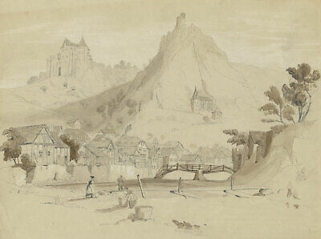

About William Z Chadwick

About Me
Hi, I'm William Z Chadwick -
Father of 3, husband of Stormi, and aspiring apprentice of all trades, I (almost) hold a degree in English from Oklahoma Baptist University.
I have completed a Minor in Graphic Design and am currently a student in Promineo Tech's Front End Web Development Bootcamp.
---
I spend my time doing some mix of the following:
- studying coding languages (C++, Bash, Python3, JavaScript, HTML, CSS, React...),
- thinking about design, typography, and graphic design,
- tutoring high school and college students,
- working as a caregiver for the elderly and special needs communities,
- studying foreign languages (German, Japanese, Spanish, biblical Hebrew, Welsh...),
- doing sudoku, origami, mind-bending puzzles, learning to tie climbing knots, rock climbing,
- blogging about tech, ethics, spirituality and language at Perilous Resonance
- and last but not least, teaching my kids to read, explore, climb, build and more.
---